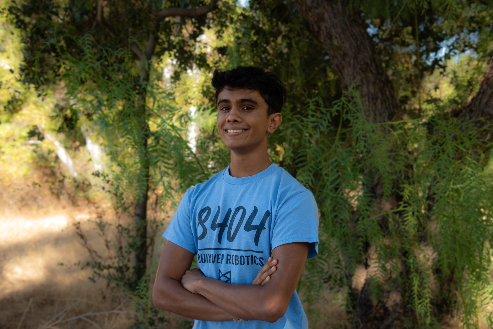
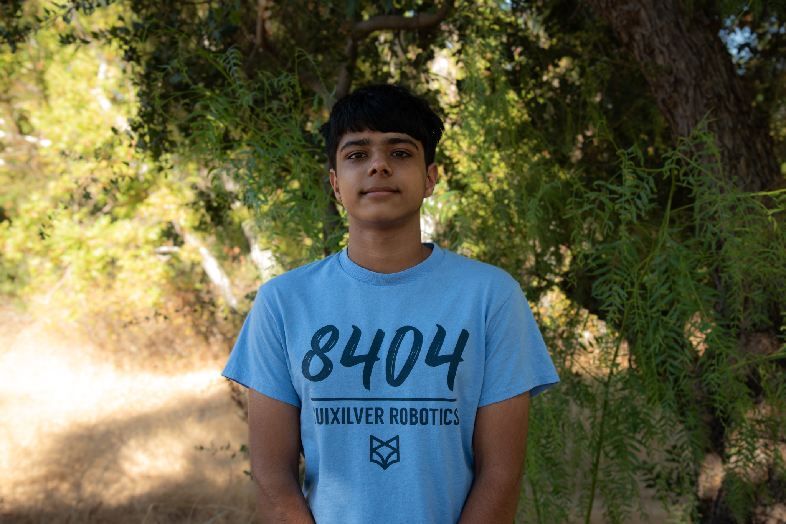
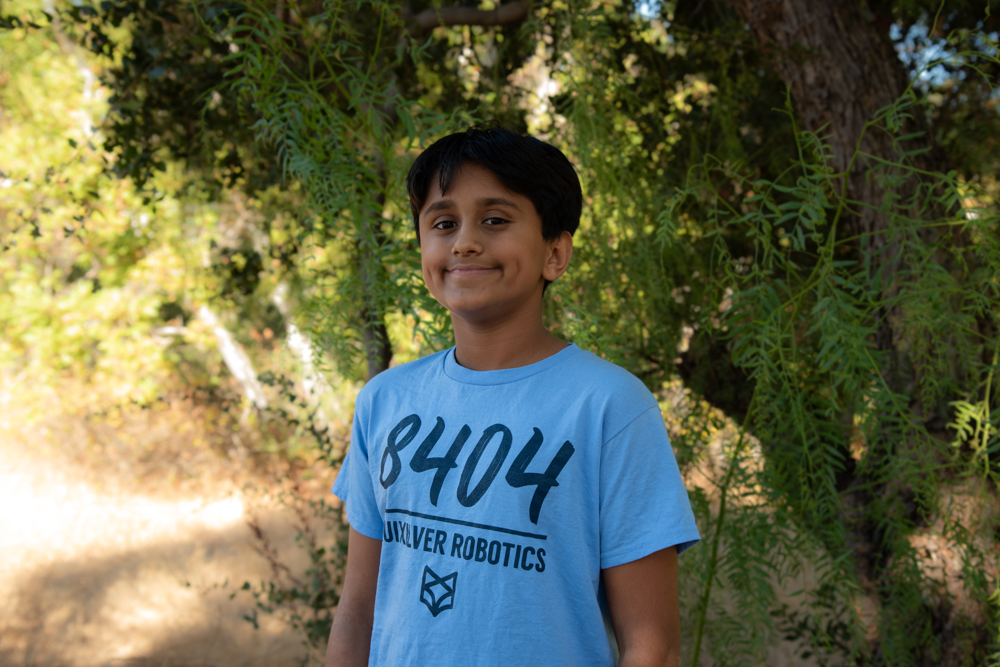

Ana Flacau (Vice Captain)
Ana is a Junior at Leland High School and is thrilled to participate in her fourth season on this team. She began her robotics career on an FLL team where she was exposed to programming. Since then, Ana has discovered her passion for mechanics while on 8404. She’s excited to continue to improve her mechanical skills this year. Outside of robotics, Ana plays for the Leland Varsity Field Hockey team. In her free time, she enjoys hanging out with friends, watching movies, backpacking, and camping. You can often find her listening to music in her room and spending time with her cat.
​Fun Fact: Ana has backpacked around 60 miles of the Pacific Crest Trail, a trail spanning from Mexico to Canada.

Ishaan Desai (Programming Lead and Vice Captain)
​Ishaan is a junior who is thrilled to start his FTC journey with Team Quixilver 8404. His passion for robotics began early, driven by a fascination with how simple components can come together to create something complex. His experience in Lego robotics has led him to build a number of robots with varied capabilities.
Fun Fact: Ishaan's favorite vegetable is carrots.

Jaiveer Bala (Mechanical Lead)
Jaiveer is a freshman at Leland High School and is excited for his third year on 8404! Jaiveer has always enjoyed the mechanical aspect of things, and he does several projects on the side. Aside from robotics, he likes to listen to music, play video games with his friends till late at night, and play basketball. You can often find him in his room designing something new.
​Fun Fact: Jaiveer is the youngest mech lead in team history.

Farzan Islam (Outreach Lead)
Farzan is a sophomore at Leland High School and is looking forward to his second year on Quixilver 8404 as a returning outreach member. He hopes to apply his knowledge from the previous season and is looking forward to continuing his outreach journey. He is excited to expand the team’s outreach opportunities this season and aims to increase the impact of this team on the community. Outside of robotics, he plays the piano and is part of a Boy Scouts troop. He enjoys math and science, and plays percussion in the school's band. In his free time, Farzan is either reading, playing video games, playing soccer with friends, or camping with the Boy Scouts troop.
Fun fact: Farzan is currently taking flight lessons.

Daniel Pashkevich (Mechanical)
Daniel is a sophomore at Leland High School and is extremely excited to be part of the team for his second year. Daniel is very passionate about engineering and has loved it for as long as he can remember. From building Legos to working with a real robot, his knowledge in engineering has come a long way. Every day Daniel aims to learn new things and advance his skills in the field, often doing so with the help of robotics. In his free time, Daniel typically spends his time playing soccer or hanging out with friends. He also loves music, and spends much of his time listening to it. He also enjoys video games, TV shows, and spending time outside with his family.
Fun fact: Daniel has two younger brothers.
Aarav Choksi (Mechanical)
Aarav is a freshman at Leland High School and excited for his first year with Quixilver. He began his robotics journey with LEGO, later moving into VEX and FTC. Aarav is part of the mechanical subteam and looks forward to learning more about designing and building robots. Outside of robotics, he participates in Boy Scouts and plays piano. In his free time, Aarav enjoys spending time with friends and family or playing video games.
Fun fact: Aarav was born in the Netherlands.
Siddharth Gandhi (Mechanical)
Siddharth is a freshman at Leland High School and is thrilled for his first year in robotics with Quixilver. He has loved engineering for as long as he can remember from LEGOS to eco-friendly hand made creations. On mechanical, he has learned many skills from CAD to thinking outside the box and is exited to implement it into his daily life. Outside of robotics, Siddharth enjoys camping with his Boy Scout troop, playing the piano, and playing ice hockey. In his free time he is often on the ice, reading books, going for hikes inside and outside the country, or hanging out with family and friends.
​Fun fact: Siddharth has been playing ice hockey for more than 7 years.

Charlie Sridhara (Mechanical)
​Charlie, an eighth grader at Bret Harte Middle School, is thrilled to start his second year with Team Quixilver 8404. His passion for robotics began early, driven by a fascination with how simple components can come together to create something complex. His experience in Lego robotics has led him to build a number of robots with varied capabilities. Outside of robotics, Charlie is interested in video games, karate, and math.
​​Fun fact: Charlie has been to all seven continents.
Rayden Khor (Mechanical)
Rayden is a sophomore at Leland High School and is excited for his second year with Quixilver 8404. Rayden has previously participated in Lego Robotics and enjoys the logic-based aspects of programming. He is very excited to be honing his programming and mathematical skills this year with the team. He plays the piano and volunteers at local soup kitchens. In his free time, he reads and spends time in the garage. You can find him spending time with family and reading.
Fun Fact: Rayden enjoys collecting stationary.

Tony Dung (Programming)
Tony, a sophomore at Leland High School, is excited for his second year on Team 8404. He loves working on big projects with others and has been coding for 5 years, and attends USCAO competitions. He's good with C++ and Python, and knows some Java too. He can't wait to learn more about coding, meet new people, and have a good time with his friends. When he’s not doing school work, you can find him playing piano, sports, or listening to music.
​Fun Fact: Tony has a pet corgi named Coco!
Sarina Qureshi (Outreach)
Sarina is a freshman in high school and is beyond excited for her third year on the team. She loves building, teaching, and anything that lets her create. Outside of robotics, you’ll usually find her hanging out with friends, reading, or listening to music.
​​Fun fact: Sarina loves murder mysteries and thriller books.

Mr. Kevin Tibbs (Head Mentor)
​Spending the first 15 years of his professional life as an industrial researcher, Mr. Tibbs started teaching both Physics and Electronics at Leland High School in 2008 after a career change. He values his teaching experience as the most rewarding and satisfying part of his life. In 2014, he saw an opportunity to expand into robotics, so he started FTC 8404. He never ceases to be amazed at how clever, focused, and driven his students are and loves seeing his team use the engineering process to develop not only their robot but themselves. He continues to enjoy watching young people grow into responsible young adults and hopes to continue working with his community for a long time.
​​Fun fact: He continues to challenge himself mentally by learning a language and physically by climbing walls.